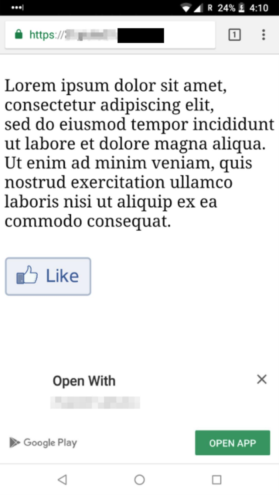
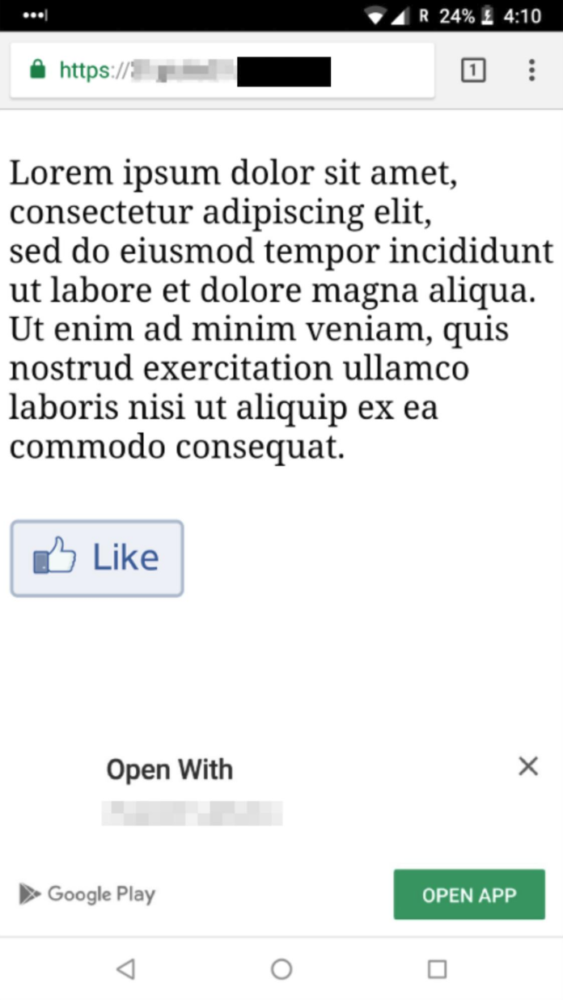

Phishing Attacks on Modern Android
Abstract
Modern versions of Android have introduced a number of features in the name of convenience. This paper shows how two of these features, mobile password managers and Instant Apps, can be abused to make phishing attacks that are significantly more practical than existing ones. We have studied the leading password managers for mobile and we uncovered a number of design issues that leave them open to attacks. For example, we show it is possible to trick password managers into auto-suggesting credentials associated with arbitrary attacker-chosen websites. We then show how an attacker can abuse the recently introduced Instant Apps technology to allow a remote attacker to gain full UI control and, by abusing password managers, to implement an end-to-end phishing attack requiring only few user's clicks. We also found that mobile password managers are vulnerable to "hidden fields" attacks, which makes these attacks even more practical and problematic. We conclude this paper by proposing a new secure-by-design API that avoids common errors and we show that the secure implementation of autofill functionality will require a community-wide effort, which this work hopes to inspire.
Main Takeaways
This work explores how to abuse "modern" features of Android to mount phishing attacks. We focus on two specific of such modern features: Password Managers (PMs) for Android and Instant Apps. We show how to abuse them when taken individually and when combining them. This work also proposes a countermeasure and it wishes to inspire a community-wide effort that is required to tackle these problems.
- Mobile password managers have an important and difficult job: they need to suggest a set of credentials to users of mobile apps. What makes this difficult is that credentials are associated to web backends, not to mobile apps. E.g., Facebook credentials are associated to facebook.com, they are not intrinsically associated to the official Facebook Android app. Essentially, a mobile password manager needs to bridge the two worlds of "web" and "mobile".
- This brings us to the mapping problem: How can a PM map apps to domain names? How can a PM know that a given app is, for example, the official Facebook app and not a malicious app that pretends to be the legitimate one?
- It turns out that PMs rely on one of three mechanisms: Accessibility Service (a11y), Autofill Framework, and OpenYOLO. The problem: all three mechanisms use app's package names as their main abstraction to identify apps. However, within the Android ecosystem, package names cannot be trusted.
- Findings: We studied the top five mobile password managers. Four of them implement some sort of mapping strategy; three of these implement their strategy via simple heuristics that an attacker can game (see below for details). This is a problem: it becomes easy to trick these PMs into auto-suggesting "targeted" attacker-controlled credentials.
- Important note: the password managers auto-suggest relevant credentials, but they do not automatically fill the form on behalf of the user. This means, these attacks require a click from the user. However, having a password manager auto-suggesting Facebook-related credentials to an app that claims to be Facebook 1) adds legitimacy to the phishing attack and 2) make them vulnerable to auto-filling "hidden password fields" (see below). As a community, we can and should do better.
-
Keeper (vulnerable).
Keeper builds a heuristic-based mapping as follows: it uses the app package name to infer the URL of the app webpage on the Play Store (e.g., when the user opens the Facebook app, whose package name is
com.facebook.katana, Keeper tries to access the webpage athttps://play.google.com/store/apps/details?gl=us&id=com.facebook.katana). Then, if the webpage exists, Keeper parses out the domain name of the URL specified in the "app developer website field." This is the domain name that Keeper considers as the rightful owner, and it then stores the package name → domain name association in its internal mapping database. Finally, Keeper auto-suggests the credentials associated with this just-retrieved domain name. -
Dashlane (vulnerable).
Dashlane implements a heuristic-based mapping that attempts to infer which domain name should be associated to a given package name. It works in this way: Dashlane first splits the package name in components separated by the dots (e.g., the
aaa.bbb.cccis split in the three componentsaaa,bbb, andccc). Then, for each component, it checks whether at least three of its characters are contained in the "website" field of one (or more) of Dashlane entries. For example, the package namexxx.face.yyytriggers an auto-suggestion forfacebook.comcredentials. -
LastPass (vulnerable).
Given a package name, e.g.,
aaa.bbb.ccc, LastPass splits it in components separated by the dots (e.g.,aaa,bbb, andccc), and it builds a domain name pattern by using the first two in reversed order (e.g.,bbb.aaa). LastPass will then suggest to the user all the credentials associated with domain names with a shared suffix. For example, an app with package namecom.facebook.evilwill trigger an auto-suggestion forfacebook.com. - 1Password. 1Password does not implement any mapping, but it trivially suggests each stored credential through a searchable list, delegating the choice to the user. In other words, it is possible to autofill any requesting app with any stored credential.
- Google Smart Lock. We believe that GSL mapping is securely implemented. However, the burden of mapping creation is delegated to the developer who has to provide all the necessary information to Google. In particular, the official documentation describes a multi-step process. From the technical standpoint, this process is based on Digital Asset Links, through which an app can be verifiably linked to a website. However, this procedure is not fully automated, and developers are requested to manually fill a Google form and to provide a number of information.
- Transparency. It is possible to set the alpha value to 0.01, and the now-invisible password field is still auto-filled by PMs.
- Small Size. It is possible to set the size of the password field to 1dp x 1dp, which is enough to hide it from the user.
- Same foreground/background color. It is possible to set the foreground and background color to the same value, so that the user will not notice that a value has been inserted.
- "Invisible" flag. It is possible to set the visibility of a field to
View.INVISIBLE.
Instant apps are a new technology that allow users to "try" parts of Android apps without installing them. The execution of an Instant App is bootstrapped once the user visits a developer-specified link associated to it: the user is asked whether she wants to start the Instant App and, one click after, the Instant App is running on the user's device. Instant apps have many constraints, mainly with regard to permissions. However, they can control every pixel on the device UI: this is enough to mount phishing attacks.
It is possible to combine mobile password managers and Instant Apps to build new phishing attacks: we found that mobile password managers do not check whether a "target" app is an Instant App or not. That is, current mobile password managers auto-suggest credentials even to Instant Apps. Here there are the four steps of a potential attack:
 



- This work highlights how the current APIs are error-prone and lead to security problems. However, Digital-Asset-Link (DAL) could be used as a foundation to make the implementation of this mapping safe. In fact, DAL allows developers to declare "it is safe to associate our domain X to Android apps with package name Y and signed by certificate Z". For example, here there is the DAL entry by Facebook: link.
- We have developed a new
getVerifiedDomainNames()API that builds on DAL entries and "forces" developers to do the right thing without taking shortcuts. We hope Google will pick it up and build on top of it. - Unfortunately, only ~2% of websites (taken from a dataset of 8,821 websites very likely to offer login functionality, check the paper for more details), seem to specify DAL entries. This is why, we believe, Google Smart Lock still requires a manual step to establish an actual mapping. This low adoption rate is problematic: current mobile password managers cannot safely map package names to domain names for the vast majority of websites out there.
- We believe password managers developers cannot solve this problem alone at scale: We hope this work will inspire the community to move forward on DAL adoption. For the time being, we also hope that Google will publicly release their "private", manually-collected mapping!
The Paper
Phishing Attacks on Modern Android
Simone Aonzo, Alessio Merlo, Giulio Tavella, and Yanick Fratantonio.
In the Proceedings of the ACM Conference on Computer and Communications Security (CCS), Toronto, Canada, October 2018.
[PDF]
[Slides]
@InProceedings{aonzo18:phishing,
author = {Simone Aonzo and Alessio Merlo and Giulio Tavella and Yanick Fratantonio},
title = {{Phishing Attacks on Modern Android}},
booktitle = {Proceedings of the ACM Conference on Computer and Communications Security (CCS)},
month = {October},
year = {2018},
address = {Toronto, Canada}
}
The Team
- Simone Aonzo (@packm4d), University of Genova, Italy
- Alessio Merlo (@dreamersball80), University of Genova, Italy
- Giulio Tavella, University of Genova, Italy
- Yanick Fratantonio (@reyammer), EURECOM, France
Disclosure & Acknowledgements
We have disclosed our findings to the security teams of the password managers we found vulnerable. We have also disclosed our research findings to Google. We would like to acknowledge their quick and professional handling of the matter. The affected vendors have deployed countermeasures or are in the process of doing so.We would like in particular to thank Keeper's team. Keeper (very!) quickly addressed our concerns and published an application change in version 12.1.1, which was released in July 2018. Keeper has also published an official blog post about our work. Again, kudos to them!